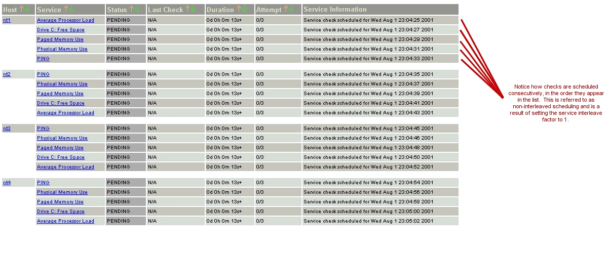
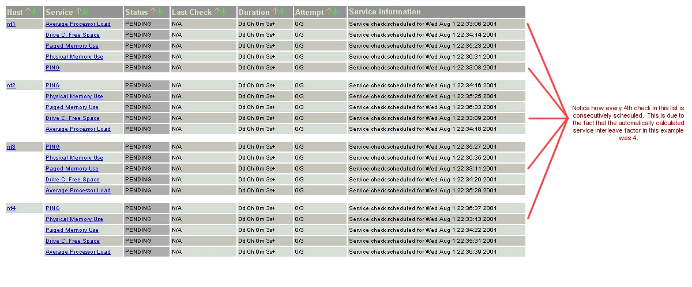
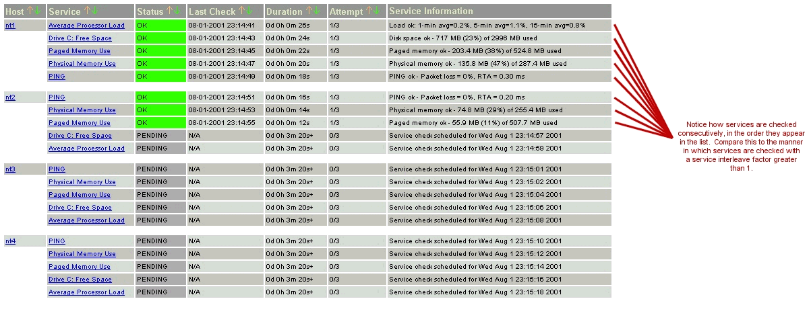
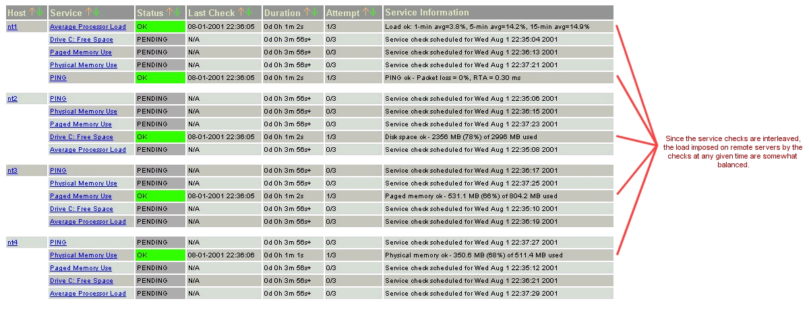
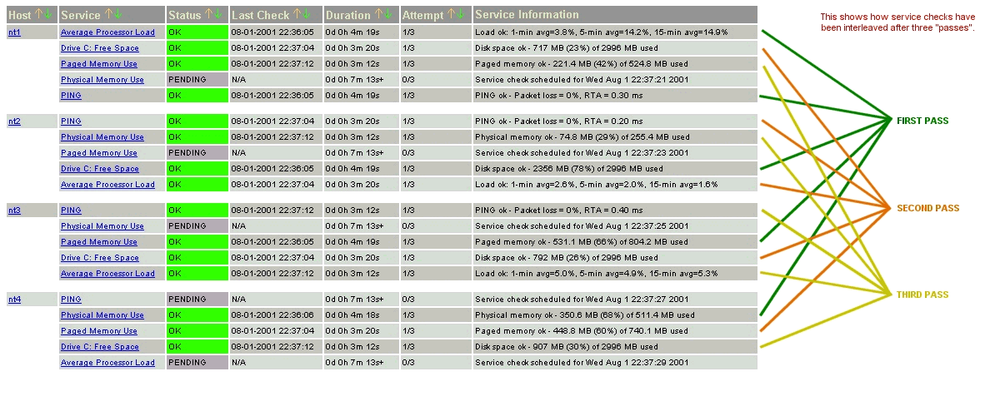
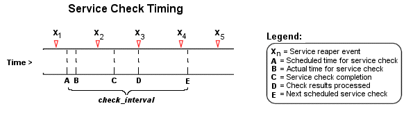

Index
Introduction
Configuration options
Initial scheduling
Inter-check delay
Service interleaving
Max concurrent service checks
Time restraints
Normal scheduling
Scheduling during problems
Host checks
Scheduling delays
Scheduling example
Service definition options that affect scheduling
I've gotten a lot of questions regarding how service checks are scheduled in certain situations, along with how the scheduling differs from when the checks are actually executed and their results are processed. I'll try to go into a little more detail on how this all works...
Before we begin, there are several configuration options that affect how service checks are scheduled, executed, and processed. For starters, each service definition contains three options that determine when and how each specific service check is scheduled and executed. Those three options include:
There are also four configuration options in the main configuration file that affect service checks. These include:
We'll go into more detail on how all these options affect service check scheduling as we progress. First off, let's see how services are initially scheduled when Nagios first starts or restarts...
When Nagios (re)starts, it will attempt to schedule the initial check of all services in a manner that will minimize the load imposed on the local and remote hosts. This is done by spacing the initial service checks out, as well as interleaving them. The spacing of service checks (also known as the inter-check delay) is used to minimize/equalize the load on the local host running Nagios and the interleaving is used to minimize/equalize load imposed on remote hosts. Both the inter-check delay and interleave functions are discussed below.
Even though service checks are initially scheduled to balance the load on both the local and remote hosts, things will eventually give in to the ensuing chaos and be a bit random. Reasons for this include the fact that services are not all checked at the same interval, some services take longer to execute than others, host and/or service problems can alter the timing of one or more service checks, etc. At least we try to get things off to a good start. Hopefully the initial scheduling will keep the load on the local and remote hosts fairly balanced as time goes by...
Note: If you want to view the initial service check scheduling information, start Nagios using the -s command line option. Doing so will display basic scheduling information (inter-check delay, interleave factor, first and last service check time, etc) and will create a new status log that shows the exact time that all services are initially scheduled. Because this option will overwrite the status log, you should not use it when another copy of Nagios is running. Nagios does not start monitoring anything when this argument is used.
As mentioned before, Nagios attempts to equalize the load placed on the machine that is running Nagios by equally spacing out initial service checks. The spacing between consecutive service checks is called the inter-check delay. By giving a value to the service_inter_check_delay_method variable in the main config file, you can modify how this delay is calculated. I will discuss how the "smart" calculation works, as this is the setting you will want to use for normal operation.
When using the "smart" setting of the service_inter_check_delay_method variable, Nagios will calculate an inter-check delay value by using the following calculation:
inter-check delay = (average check interval for all services) / (total number of services)
Let's take an example. Say you have 1,000 services that each have a normal check interval of 5 minutes (obviously some services are going to be checked at different intervals, but let's look at an easy case...). The total check interal time for all services is 5,000 (1,000 * 5). That means that the average check interval for each service is 5 minutes (5,000 / 1,000). Give that information, we realize that (on average) we need to re-check 1,000 services every 5 minutes. This means that we should use an inter-check delay of 0.005 minutes (0.3 seconds) when spacing out the initial service checks. By spacing each service check out by 0.3 seconds, we can somewhat guarantee that Nagios is scheduling and/or executing 3 new service checks every second. By spacing the checks out evenly over time like this, we can hope that the load on the local server that is running Nagios remains somewhat balanced.
As discussed above, the inter-check delay helps to equalize the load that Nagios imposes on the local host. What about remote hosts? Is it necessary to equalize load on remote hosts? Why? Yes, it is important and yes, Nagios can help out with this. Equalizing load on remote hosts is especially important with the advent of service check parallelization. If you monitor a large number of services on a remote host and the checks were not spread out, the remote host might think that it was the victim of a SYN attack if there were a lot of open connections on the same port. Plus, attempting to equalize the load on hosts is just a nice thing to do...
By giving a value to the service_interleave_factor variable in the main config file, you can modify how the interleave factor is calculated. I will discuss how the "smart" calculation works, as this will probably be the setting you will want to use for normal operation. You can, however, use a pre-set interleave factor instead of having Nagios calculate one for you. Also of note, if you use an interleave factor of 1, service check interleaving is basically disabled.
When using the "smart" setting of the service_interleave_factor variable, Nagios will calculate an interleave factor by using the following calculation:
interleave factor = ceil ( total number of services / total number of hosts )
Let's take an example. Say you have a total of 1,000 services and 150 hosts that you monitor. Nagios would calculate the interleave factor to be 7. This means that when Nagios schedules initial service checks it will schedule the first one it finds, skip the next 6, schedule the next one, and so on... This process will keep repeating until all service checks have been scheduled. Since services are sorted (and thus scheduled) by the name of the host they are associated with, this will help with minimizing/equalizing the load placed upon remote hosts.
The images below depict how service checks are scheduled when they are not interleaved (service_interleave_factor=1) and when they are interleaved with the service_interleave_factor variable equal to 4.
| Non-Interleaved Checks: | Interleaved Checks: |
|  |  |
|  |  |
|  |
Maximum Concurrent Service Checks
In order to prevent Nagios from consuming all of your CPU resources, you can restrict the maximum number of concurrent service checks that can be running at any given time. This is controlled by using the max_concurrent_checks option in the main config file.
The good thing about this setting is that you can regulate Nagios' CPU usage. The down side is that service checks may fall behind if this value is set too low. When it comes time to execute a service check, Nagios will make sure that no more than x service checks are either being executed or waiting to have their results processed (where x is the number of checks you specified for the max_concurrent_checks option). If that limit has been reached, Nagios will postpone the execution of any pending checks until some of the previous checks have completed. So how does one determine a reasonable value for the max_concurrent_checks option?
First off, you need to know the following things...
Next, use the following calculation to determine a reasonable value for the maximum number of concurrent checks that are allowed...
max. concurrent checks = ceil( max( service reaper frequency , average check execution time ) / inter-check delay )
The calculated number should provide a reasonable starting point for the max_concurrent_checks variable. You may have to increase this value a bit if service checks are still falling behind schedule or decrease it if Nagios is hogging too much CPU time.
Let's say you are monitoring 875 services, each with an average check interval of 2 minutes. That means that your inter-check delay is going to be 0.137 seconds. If you set the service reaper frequency to be 10 seconds, you can calculate a rough value for the max. number of concurrent checks as follows (I'll assume that the average execution time for service checks is less than 10 seconds) ...
max. concurrent checks = ceil( 10 / 0.137 )
In this case, the calculated value is going to be 73. This makes sense because (on average) Nagios are going to be executing just over 7 new service checks per second and it only processes service check results every 10 seconds. That means at given time there will be a just over 70 service checks that are either being executed or waiting to have their results processed. In this case, I would probably recommend bumping the max. concurrent checks value up to 80, since there will be delays when Nagios processes service check results and does its other work. Obviously, you're going to have test and tweak things a bit to get everything running smoothly on your system, but hopefully this provided some general guidelines...
The check_period option determines the time period during which Nagios can run checks of the service. Regardless of what status a particular service is in, if the time that it is actually executed is not a vaid time within the time period that has been specified, the check will not be executed. Instead, Nagios will reschedule the service check for the next valid time in the time period. If the check can be run (e.g. the time is valid within the time period), the service check is executed.
Note: Even though a service check may not be able to be executed at a given time, Nagios may still schedule it to be run at that time. This is most likely to happen during the initial scheduling of services, although it may happen in other instances as well. This does not mean that Nagios will execute the check! When it comes time to actually execute a service check, Nagios will verify that the check can be run at the current time. If it cannot, Nagios will not execute the service check, but will instead just reschedule it for a later time. Don't let this one throw you confuse you! The scheduling and execution of service checks are two distinctly different (although related) things.
In an ideal world you wouldn't have network problems. But if that were the case, you wouldn't need a network monitoring tool. Anyway, when things are running smoothly and a service is in an OK state, we'll call that "normal". Service checks are normally scheduled at the frequency specified by the check_interval option. That's it. Simple, huh?
So what happens when there are problems with a service? Well, one of the things that happens is the service check scheduling changes. If you've configured the max_attempts option of the service definition to be something greater than 1, Nagios will recheck the service before deciding that a real problem exists. While the service is being rechecked (up to max_attempts times) it is considered to be in a "soft" state (as described here) and the service checks are rescheduled at a frequency determined by the retry_interval option.
If Nagios rechecks the service max_attempts times and it is still in a non-OK state, Nagios will put the service into a "hard" state, send out notifications to contacts (if applicable), and start rescheduling future checks of the service at a frequency determined by the check_interval option.
As always, there are exceptions to the rules. When a service check results in a non-OK state, Nagios will check the host that the service is associated with to determine whether or not is up (see the note below for info on how this is done). If the host is not up (i.e. it is either down or unreachable), Nagios will immediately put the service into a hard non-OK state and it will reset the current attempt number to 1. Since the service is in a hard non-OK state, the service check will be rescheduled at the normal frequency specified by the check_interval option instead of the retry_interval option.
Unlike service checks, host checks are not scheduled on a regular basis. Instead they are run on demand, as Nagios sees a need. This is a common question asked by users, so it needs to be clarified.
One instance where Nagios checks the status of a host is when a service check results in a non-OK status. Nagios checks the host to decide whether or not the host is up, down, or unreachable. If the first host check returns a non-OK state, Nagios will keep pounding out checks of the host until either (a) the maximum number of host checks (specified by the max_attempts option in the host definition) is reached or (b) a host check results in an OK state.
Also of note - when Nagios is check the status of a host, it holds off on doing anything else (executing new service checks, processing other service check results, etc). This can slow things down a bit and cause pending service checks to be delayed for a while, but it is necessary to determine the status of the host before Nagios can take any further action on the service(s) that are having problems.
It should be noted that service check scheduling and execution is done on a best effort basis. Individual service checks are considered to be low priority events in Nagios, so they can get delayed if high priority events need to be executed. Examples of high priority events include log file rotations, external command checks, and service reaper events. Additionally, host checks will slow down the execution and processing of service checks.
The scheduling of service checks, their execution, and the processing of their results can be a bit difficult to understand, so let's look at a simple example. Look at the diagram below - I'll refer to it as I explain how things are done.
| Image 5. |
|  |
First off, the Xn events are service reaper events that are scheduled at a frequency specified by the service_reaper_frequency option in the main config file. Service reaper events do the work of gathering and processing service check results. They serve as the core logic for Nagios, kicking off host checks, event handlers and notifications as necessary.
For the example here, a service has been scheduled to be executed at time A. However, Nagios got behind in its event queue, so the check was not actually executed until time B. The service check finished executing at time C, so the difference between points C and B is the actual amount of time that the check was running.
The results of the service check are not processed immediately after the check is done executing. Instead, the results are saved for later processing by a service reaper event. The next service reaper event occurs at time D, so that is approximately the time that the results are processed (the actual time may be later than D since other service check results may be processed before this one).
At the time that the service reaper event processes the service check results, it will reschedule the next service check and place it into Nagios' event queue. We'll assume that the service check resulted in an OK status, so the next check at time E is scheduled after the originally scheduled check time by a length of time specified by the check_interval option. Note that the service is not rescheduled based off the time that it was actually executed! There is one exception to this (isn't there always?) - if the time that the service check is actually executed (point B) occurs after the next service check time (point E), Nagios will compensate by adjusting the next check time. This is done to ensure that Nagios doesn't go nuts trying to keep up with service checks if it comes under heavy load. Besides, what's the point of scheduling something in the past...?
Service Definition Options That Affect Scheduling
Each service definition contains a normal_check_interval and retry_check_interval option. Hopefully this will clarify what these two options do, how they relate to the max_check_attempts option in the service definition, and how they affect the scheduling of the service.
First off, the normal_check_interval option is the interval at which the service is checked under "normal" circumstances. "Normal" circumstances mean whenever the service is in an OK state or when its in a hard non-OK state.
When a service first changes from an OK state to a non-OK state, Nagios gives you the ability to temporarily slow down or speed up the interval at which subsequent checks of that service will occur. When the service first changes state, Nagios will perform up to max_check_attempts-1 retries of the service check before it decides its a real problem. While the service is being retried, it is scheduled according to the retry_check_interval option, which might be faster or slower than the normal normal_check_interval option. While the service is being rechecked (up to max_check_attempts-1 times), the service is in a soft state. If the service is rechecked max_check_attempts-1 times and it is still in a non-OK state, the service turns into a hard state and is subsequently rescheduled at the normal rate specified by the check_interval option.
On a side note, it you specify a value of 1 for the max_check_attempts option, the service will not ever be checked at the interval specified by the retry_check_interval option. Instead, it immediately turns into a hard state and is subsequently rescheduled at the rate specified by the normal_check_interval option.
{kind=link}
{kind=link}
{kind=link}
{kind=link}
{kind=link}